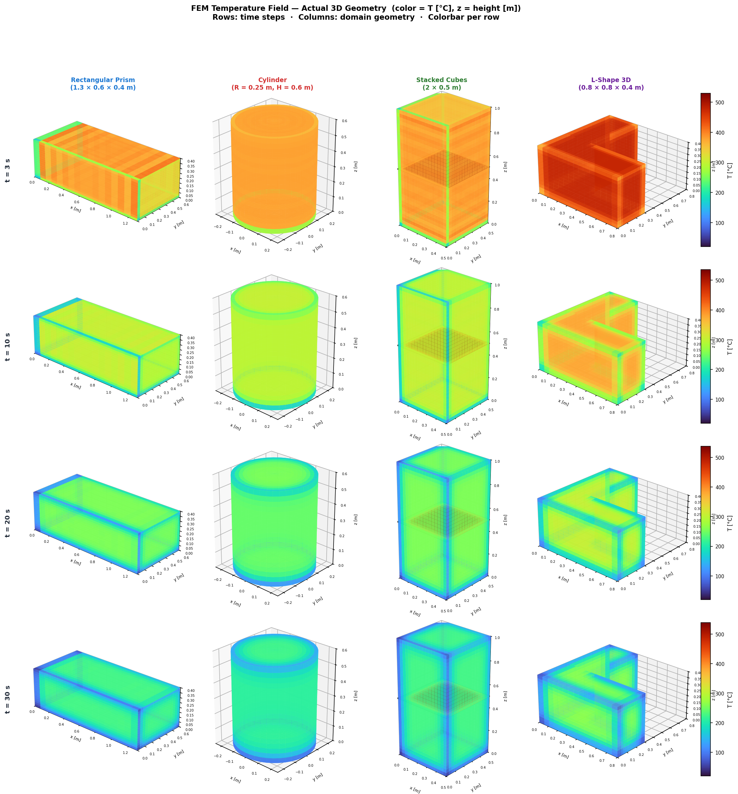
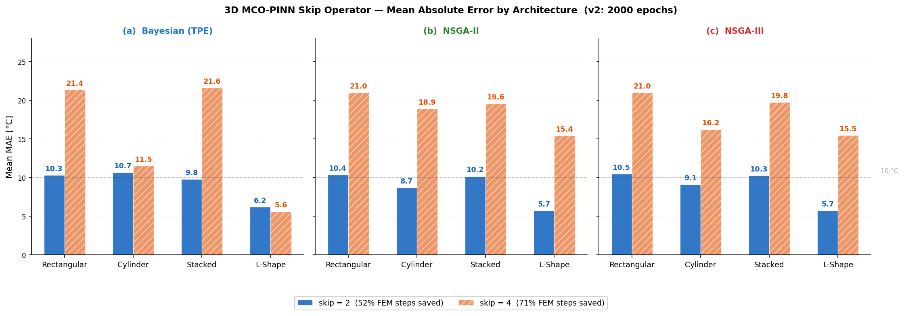
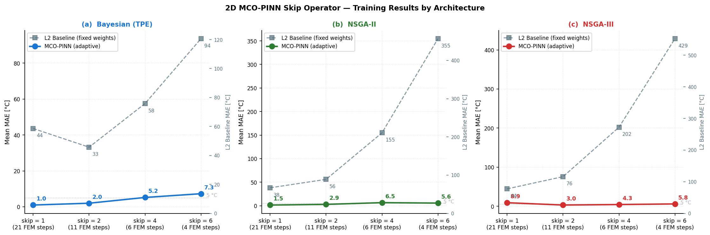
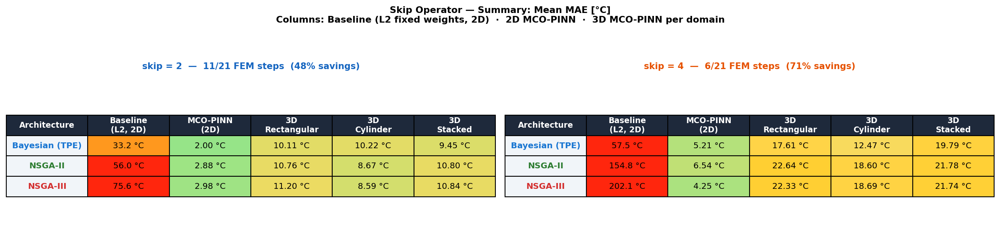
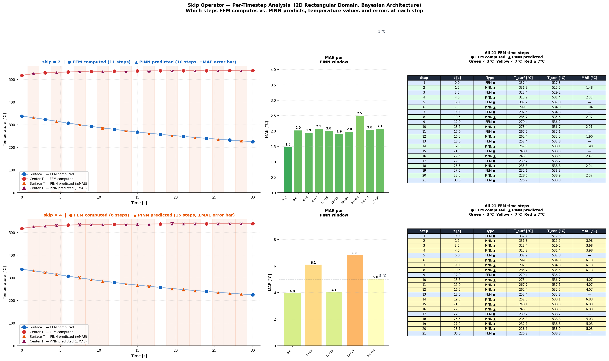
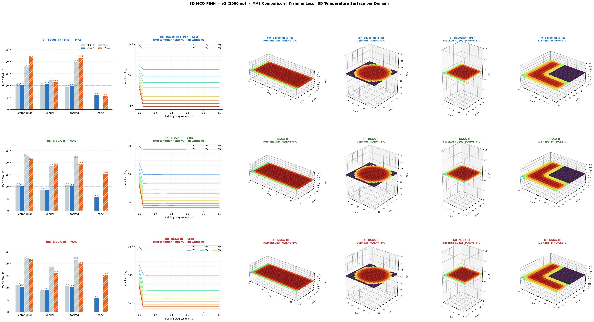
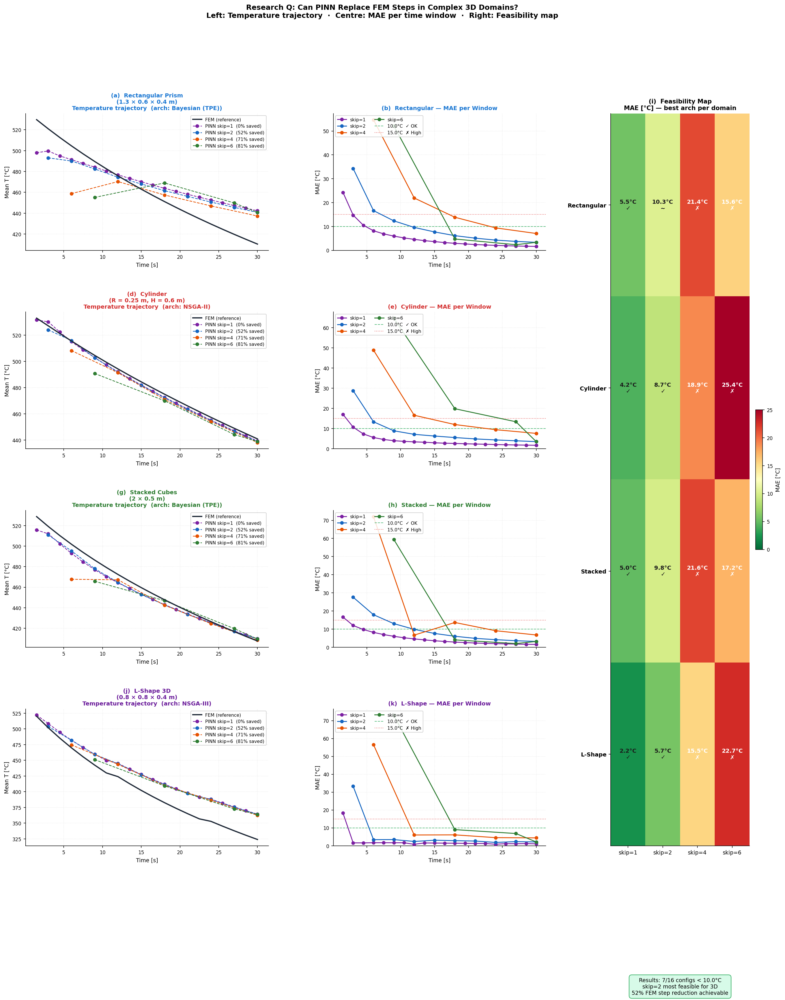
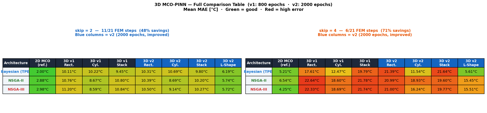

NAS with multi-criteria optimisation (MCO) is applied to four 3D casting geometries: Rectangular, Cylinder, Stacked Cubes, and L-Shape. The skip operator is evaluated in true 3D. Best result: L-Shape/NSGA-II at skip=1 achieves MAE = 2.19°C. Extended complex casting geometry introduced as future work.
Same skip strategy as Level 2 (2D), now applied in full 3D volume. At each anchor step FEM runs; between anchors the PINN predicts T(x,y,z,t+s·Δt) directly.
| Skip | FEM Calls | FEM Saved | Runtime ↓ |
|---|---|---|---|
| s=1 | 21/21 | 0% | baseline |
| s=2 | 11/21 | 52% | ~2× |
| s=4 | 6/21 | 71% | ~4× |
| s=6 | 4/21 | 81% | ~6× |
Each domain represents a realistic casting geometry tested under the same A356 aluminium quenching conditions. NAS finds the optimal PINN architecture independently for each domain.
1.3 × 0.6 × 0.4 m
Full rectangular prism. Baseline domain, direct extension of Level 1–6 geometry to 3D.
R = 0.25 m, H = 0.6 m
Circular cross-section with curved boundary. PINN must learn radial symmetry without it being imposed.
2 × 0.5 m cubes stacked (total H = 1.0 m)
Step geometry with internal layer interface. Tests PINN response to non-smooth aspect ratio.
0.8 × 0.8 × 0.4 m (corner removed: cut_x=0.3, cut_y=0.3)
Non-convex 3D domain. Best performer — corner constraint simplifies the field.
Switch between FEM Exact (ground truth), PINN Prediction (what the network outputs), and L2 Error (absolute difference). Animate t = 0 → 30 s to watch the casting cool down. Change optimizer and skip value to see how prediction accuracy degrades. Drag any plot to rotate · Scroll to zoom.
Mean Absolute Error [°C] across all time windows and spatial points. Dashed line = 10°C engineering threshold.
Green = below 10°C threshold. Yellow = 10–20°C. Red = above 20°C.
| Domain | Optimizer | skip=1 (0% saved) | skip=2 (52% saved) | skip=4 (71% saved) | skip=6 (81% saved) |
|---|

Side-by-side 3D volume slices: PINN prediction (left) vs FEM reference (right) at z = mid-plane. Each row shows one time window. The turbo colormap spans 20°C (blue) to 540°C (yellow). PINN correctly captures the steep boundary cooling while maintaining smooth interior temperature gradients.




Each row represents one skip configuration. Blue blocks = FEM executed; green blocks = PINN prediction. As skip increases, green blocks dominate — reducing total simulation time proportionally while PINN maintains accuracy at anchor points.

800 epochs (v1) vs 2000 epochs (v2). Each row = one optimizer. Col 1: MAE bar chart (v1 gray vs v2 colored). Col 2: Training loss curves per time window. Cols 3–5: Actual 3D domain geometry wireframe + PINN z-mid prediction (turbo) with FEM isotherms (white). v2 uniformly improves over v1 due to longer training.

Left: Mean temperature trajectory — FEM (black) vs PINN predictions (colored) per skip value. Centre: MAE per time window — dashed green = 10°C threshold. Right: Feasibility map — ✓ <10°C | ~ 10–15°C | ✗ >15°C. The early time windows (high temperature gradient) are the hardest — skip=2 keeps all windows feasible.

The Level 8 results use simplified geometries (box, cylinder, L-shape). The actual industrial casting is a multi-layer structure with corner towers and a central boss — far more complex. Below is the skeleton framework prepared for this domain.
python run_pipeline.py --skip 2 --optimizer bayesian --n_trials 30.
| Parameter | Values |
|---|---|
| Hidden layers | 2, 3, 4, 5, 6 |
| Neurons per layer | 32, 48, 64, 96, 128, 160, 192, 256 |
| Activation | tanh, relu, gelu |
| NAS trials | 50 per domain |
| Proxy epochs | 1000 (quick eval) |
| Collocation pts | 10,000 (interior) |
| BC points | 1,500 |
| IC points | 2,000 |
python run_pipeline.py --skip 2 --optimizer bayesian --n_trials 30